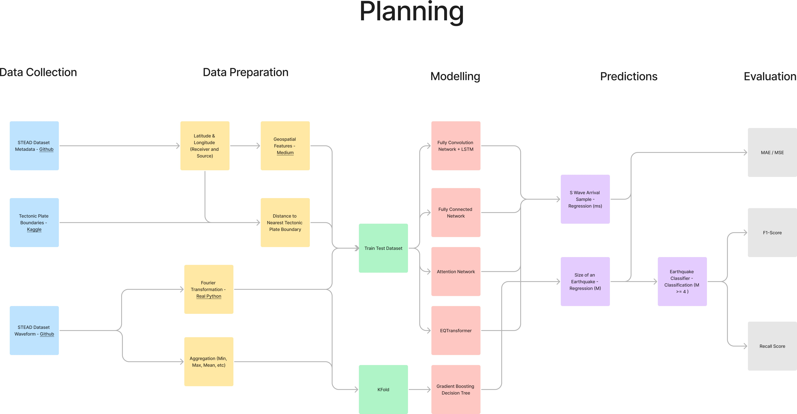
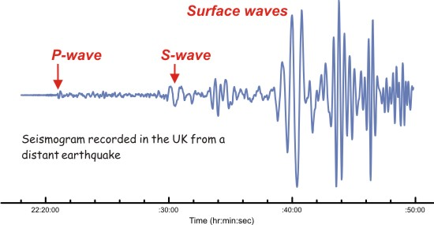
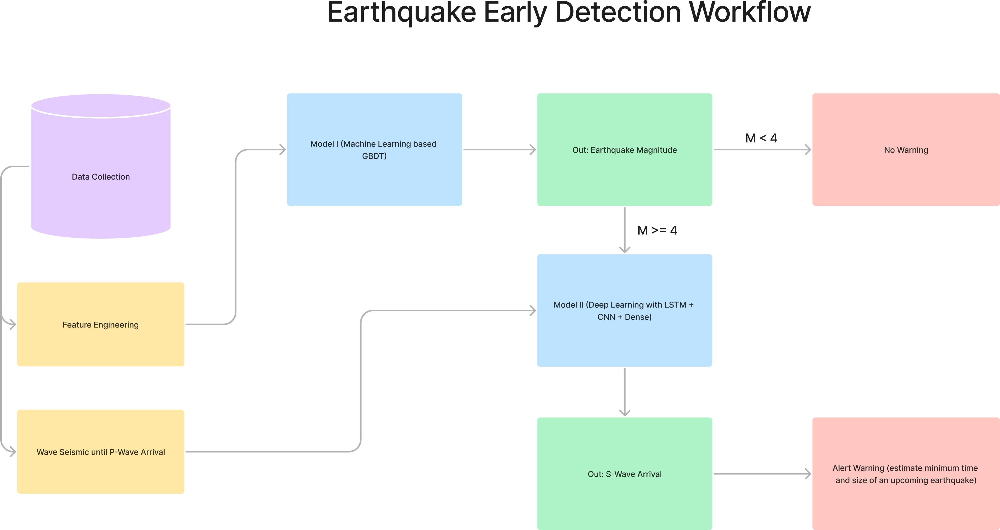
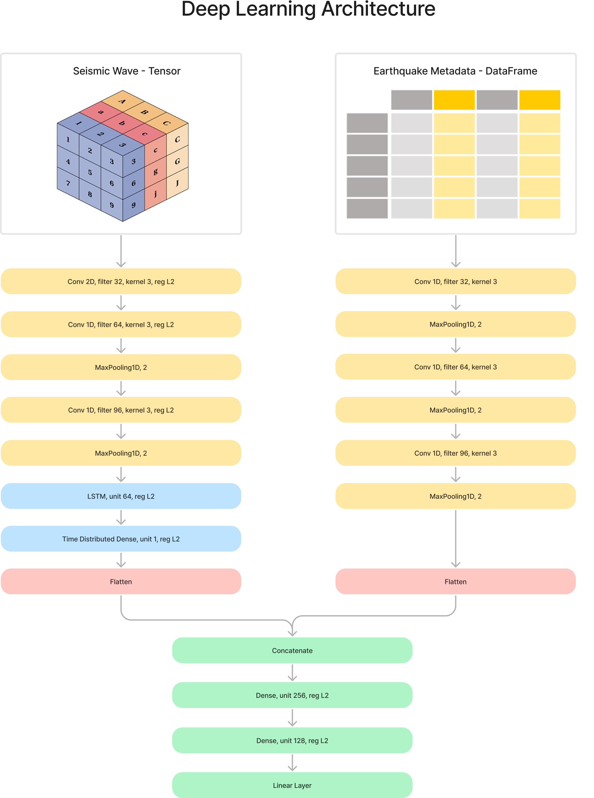
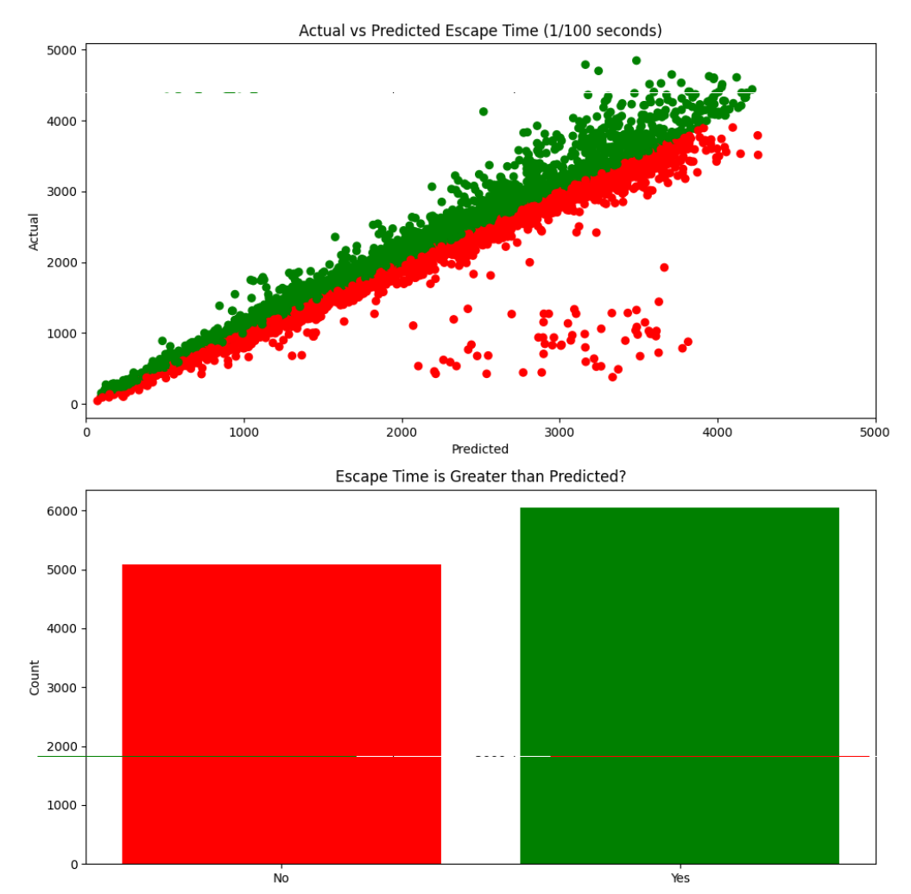

Earthquake Early Detection System Using Machine Learning
Python, LightGBM, CatBoost, LSTM, CNN, Optuna
Co-authored with Belati Jagad Bintang Syuhada and Eryawan Presma Yulianrifat.
Overview
A two-stage earthquake early warning system built on the STEAD (STanford EArthquake Dataset). The first model predicts earthquake magnitude from processed seismic waveforms using gradient boosting trees (LightGBM, CatBoost). If the predicted magnitude exceeds 4, the raw waveform is forwarded to a second deep learning model (CNN + LSTM) that predicts S-Wave arrival time. By estimating the gap between P-Wave and S-Wave arrival, the system calculates the minimum escape time available before the destructive wave hits.
All seismic data is truncated to a few seconds after P-Wave arrival to avoid data leakage, simulating a real-time detection scenario.

Dataset
The STEAD dataset contains seismic waveforms recorded across three axes (east-west, north-south, vertical). Each event spans 60 seconds at 100 samples/second (6,000 data points per axis). We used chunks 2-6, totaling approximately 1,000,000 events. Each event includes metadata such as station location, epicenter, P-Wave arrival, S-Wave arrival, and coda end timestamps.

Feature Engineering
- Cartesian coordinate rotation at 30, 45, and 60 degrees to give the model additional spatial perspectives on epicenter locations.
- Discrete Fourier Transform (DFT) on seismic waveforms to extract frequency-domain characteristics, producing 2,400 features (800 per axis), reduced to the top 20 via CatBoost feature importance.
- Haversine distance from epicenter to the nearest tectonic plate boundary.
- Waveform aggregation (min, max, mean, std, range, median, variance) to summarize sequential data for traditional ML models.
- IQR-based normalization to preserve earthquake signal characteristics that standard min-max normalization would distort.
System Workflow

Modeling
Stage 1: Magnitude Prediction
Trained on 353,900 events (P-Wave Arrival > 7s or magnitude ≥ 4) with 89 engineered features. LightGBM with Optuna hyperparameter tuning achieved the best performance. A manual threshold of 3.87 was applied post-prediction to minimize false negatives for significant earthquakes.
Stage 2: S-Wave Arrival Prediction
For events classified as magnitude ≥ 4, raw seismic waveforms (truncated at P-Wave arrival) are fed into a deep learning model combining three convolutional layers (32, 64, 96 filters) with LSTM (64 units) for the waveform branch, and a parallel convolutional branch for tabular metadata. Both branches are flattened, concatenated, and passed through three dense layers with L2 regularization.

Results
Magnitude Prediction (Classification at threshold 3.87)
| Model | F1-Score | Recall |
|---|---|---|
| CatBoost | 87.433 | 88.564 |
| LightGBM + Optuna | 89.372 | 90.632 |
S-Wave Arrival Prediction
| Model | Training MAE | Validation MAE |
|---|---|---|
| Dense Network | 2.7s | 3.8s |
| CNN Network | 1.0s | 1.1s |
| LSTM Network | 1.1s | 1.3s |
| CNN LSTM with Dense | 0.9s | 1.0s |
Escape Time Analysis
